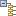

IP カタログには、デザインに追加できる IP コアおよびツールでサポートされるインターフェイス定義のリストが表示されます。IP カタログの一番上には、コアまたはインターフェイスのいずれかを表示できるタブがあります。インターフェイス定義は、インターフェイスに含まれるピンを表示するために開くことができますが、インターフェイスは IP カタログからは使用できません。IP パッケージャーを使用して IP を作成する場合は、インターフェイスにマップできます。
IP カタログは、ファンクション カテゴリ別、分類規則別、および IP リポジトリ別に分類されます。IP を名前順にリストすることもできます。分類規則とは、IP がパッケージされる際に定義されたカテゴリのことです。リポジトリは Vivado® Design Suite インストール ディレクトリ内の IP の物理的なディレクトリまたはユーザー指定のリポジトリです。ユーザー リポジトリは、右クリック メニューから [Add Repository] コマンドを使用するか、[Project Settings] ダイアログ ボックスの [IP] ページ から指定できます。詳細は、『Vivado Design Suite ユーザー ガイド : IP を使用した設計』 (UG896) のこのセクションを参照してください。
特定の IP を見つけるには、[Search] フィールド ( ) に検索文字列を入力します。
) に検索文字列を入力します。
| Options | カテゴリのリストが表示され、IP カタログをコアの生成する出力ファイル、コアで使用されるインターフェイス、ライセンス、IP プロバイダー、IP のステート別にフィルターできます。 | |
 |
Collapse all | すべての IP 階層の展開を閉じます。 |
 |
Expand all | すべての IP 階層を展開します。 |
| Hide | 現在選択しているターゲット デバイスと互換性のない IP が非表示になります。オフにすると、すべての IP が表示されます。 | |
|  | Group by | カタログに表示されている IP を分類規則、および IP のリポジトリごとにグループ分けします。 |
| Customize IP | 現在選択している IP の IP カスタマイズ用ダイアログ ボックスを開きます。選択した IP をダブルクリックしても IP はカスタマイズできます。 | |
| License Status | 選択した IP にライセンス キーが必要なことを示します。多くの IP のライセンスは、Vivado Design Suite に含まれます。その他の IP は、ザイリンクスまたはサードパーティ IP プロバイダーにより別にライセンス付与されます。 | |
| Compatible Families | [Compatible Families] ダイアログ ボックスが開き、現在選択している IP と互換性のあるデバイスがリストされ、必要であれば現在のプロジェクトのターゲット パーツを変更できます。 | |
| View Information | 現在選択している IP に関するさまざまな資料およびウェブサイトへアクセスできます。 | |
| IP Settings | [Project Settings] ダイアログ ボックスの [IP] ページを開き、現在のプロジェクトの IP 関連のツール設定をコンフィギュレーションできます。 | |
 |
Scroll | オブジェクトを [Sources] ウィンドウなどの別のウィンドウで選択した場合に、iP カタログで選択したコアをスクロールして表示します。 |
IP カタログは Vivado® IDE のワークスペースに表示されます。ワークスペースの詳細は、『Vivado Design Suite ユーザー ガイド : Vivado IDE の使用』 (UG893) のこのセクションを参照してください。
関連項目
| 『Vivado Design Suite ユーザー ガイド : IP を使用した設計』 (UG896) の「IP カタログの使用 | |
 |
Vivado Design Suite QuickTake ビデオ : Vivado での再利用可能な IP のコンフィギュレーションおよび管理 |